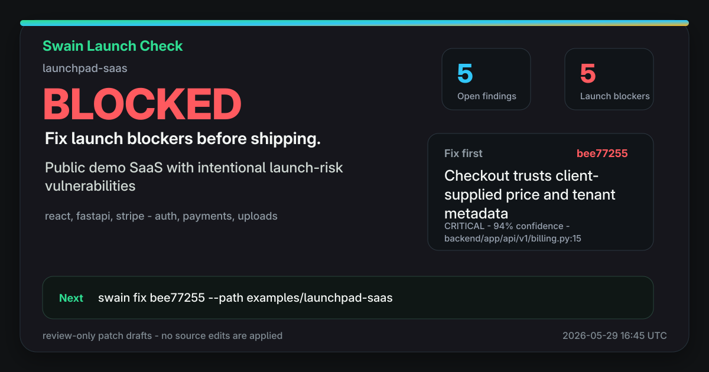
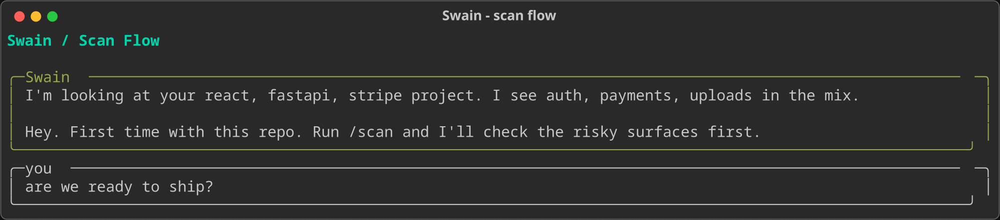

Local AI security lead for vibe-coded apps
Swain
Ask your repo if it is safe to ship. Get a launch verdict, the first fix, and a review-only patch draft before users find the bug for you.
curl -fsSL https://raw.githubusercontent.com/Descry-Technologies/Swain/main/install.sh | sh
The shareable launch moment
A launch verdict people understand.
Swain turns local scan history into a 1200x630 launch card. It shows the decision, blocker count, top issue, and next command without raw worker trace or source snippets.

Workflow
From vibe-coded repo to first fix.
The default path is built for builders who want a practical launch answer, not a security taxonomy.
Install
Run one command, then start Swain inside your repo.
Ask
Use the TUI or slash commands: "can I ship?" or `/scan`.
Rank
Swain checks launch-risk surfaces and chooses the first fix.
Draft
Codex can draft a diff, but Swain does not apply source edits.
Launch-risk surfaces
Focused on what embarrasses fast launches.
Missing server-side checks.
Client-trusted price or tenant data.
Unsafe filenames and paths.
Cross-workspace data access.
Hardcoded keys and risky env defaults.
Unsafe rendering and data queries.
Offline proof
Try the full loop without spending quota.
The public demo app is intentionally vulnerable and safe to show. Run it before pointing Swain at private code.
swain demo

Trust boundary
Conservative where AI should be conservative.
Local-first
Swain runs from your machine and writes memory under `.swain/`.
Selected files
Model workers receive focused tasks and selected file copies.
No silent edits
`swain fix` prints reviewable diffs. It does not apply patches.